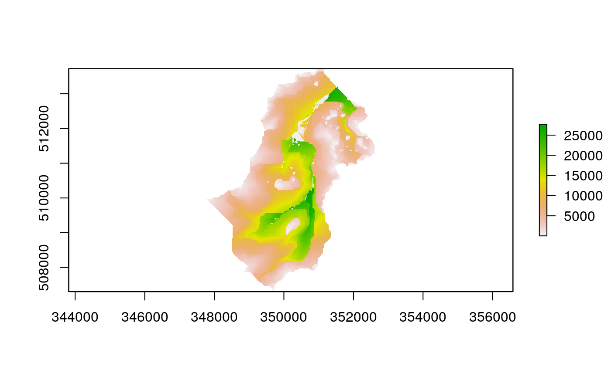

The purpose of this vignette is to provide an outline of the steps needed to build a dynamic TOPMODEL implementation using the dynatopGIS package.
Principles behind dynatopGIS
The dynatopGIS package is designed to work with a structured data flow, where by GIS data are processed through intermediate stages until one or more dynamic TOPMODEL implementations are produced. The processed GIS data are stored within two objects; a rasterBrick and a SpatialPolygonsDataFrame.
At any point in the analysis the these two objects can be written to disk and reloaded using the commands within the raster package. There is no formal linkage between the rasterBrick and SpatialPolygonsDataFrame object so spurious models may be produced if incorrect file combinations are used. Creating a document such as this vignette which documents the work flow used should significantly enhance the chances of ensuring the work is reproducible.
Getting started
The basis of the analysis are a rasterised Digital Elevation Model (DEM) of the catchment and a vectorised representation of the river network with attributes. Current these can be in any format supported by the raster and sp libraries respectivly.
However within the calculations used for sink filling, flow routing and topographic index calculations the raster DEM is presumed to be projected so that is has square or rectangular cells such that the difference between the cells centers (in meters) does not alter.
Initialising the GIS objects
The package contains functions to correctly initialise the GIS objects populated during the analysis.
In the case of the rasterBrick the initialisation function takes the DEM (either as a rasterLayer or file name). The brick in initialised by calling create_brick as follow
The returned rasterBrick a number of layers
names(brck)
#> [1] "dem" "filled_dem" "land_area" "channel_area"
#> [5] "channel_id" "atanb" "gradient" "upslope_area"
#> [9] "contour_length" "order"which are populated in the following steps. Project information is taken from the DEM.
and return for reading the DEM and river network. These read in the specified files and outputs them to the project directory in a standard format. For the DEM this is straight forward
Reading the river channel data data is more complex. Each vector object in the GIS file of channel information is treated as a length of river reach and requires the following properties
- endNode - a label for the downstream end of the river length
- startNode - a label for the upstream end of the river length
- length - the length in meters
Additional proporties are currently ignored with two exceptions: - id - this is overwrittem with a warning and used internally - width - if the channel is specified a line sections then the width property is used to buffer the lines to create channle polygons.
Since it is possible that these properties are present in the current data but under different names the create_channel function allows for renaming. To illustrate this let us examine the river network for Swindale
shp <- rgdal::readOGR(channel_file)
#> OGR data source with driver: ESRI Shapefile
#> Source: "/home/paul/R/x86_64-suse-linux-gnu-library/3.6/dynatopGIS/extdata/SwindaleRiverNetwork.shp", layer: "SwindaleRiverNetwork"
#> with 19 features
#> It has 11 fields
#> Integer64 fields read as strings: length
#> Warning in rgdal::readOGR(channel_file): Z-dimension discarded
head(shp)
#> class : SpatialLinesDataFrame
#> features : 6
#> extent : 349884.5, 351675.7, 508614.5, 513074.7 (xmin, xmax, ymin, ymax)
#> crs : +proj=tmerc +lat_0=49 +lon_0=-2 +k=0.9996012717 +x_0=400000 +y_0=-100000 +ellps=airy +towgs84=446.448,-125.157,542.06,0.15,0.247,0.842,-20.489 +units=m +no_defs
#> variables : 11
#> names : name1, identifier, startNode, endNode, form, flow, fictitious, length, name2, sinkdepth, Shape_Leng
#> min values : Hawthorn Gill, 16D0AC09-E0B6-4727-83B8-567E8DE9C533, 1FDBFCFF-799C-41CF-A2CB-8A56368BD438, 1FDBFCFF-799C-41CF-A2CB-8A56368BD438, inlandRiver, in direction, false, 29, NA, -1, 29.1895135281
#> max values : Mosedale Beck, ED03FEDD-0F4B-40C7-86E8-6F0EA8BAC182, D968F174-FB80-404A-A4A7-2862CC722482, D649B60C-E631-47FA-971E-CA388DBDDE63, inlandRiver, in direction, false, 740, NA, -1, 739.76377764The main properties are present under appropriate names and a call to create_channel with no options would be successful. However if we want to carry over the addition information in the “indentifier” as “channel_id” a named vector giving the variable names to be used could be provided. In this case:
property_names <- c(channel_id="identifier",
endNode="endNode",
startNode="startNode",
length="length")Since the data set for Swindale does not contain a channel width we use the default width of 2m in create_channel. The river network can then be created in the correct format by
chn <- create_channel(shp,property_names)
#> Warning in create_channel(shp, property_names): Modifying to spatial
#> polygons using default width
head(chn@data)
#> channel_id
#> 0 16D0AC09-E0B6-4727-83B8-567E8DE9C533
#> 1 643017BB-01BC-4738-898F-1C62B84164BF
#> 2 D2C2703E-A32F-4D88-A022-4E27EA52FC5C
#> 3 991D9896-CA0C-492F-A6EE-8BA3972DDA3C
#> 4 CC8639D7-00D2-4C26-9252-350E5A748D51
#> 5 ED03FEDD-0F4B-40C7-86E8-6F0EA8BAC182
#> endNode
#> 0 72B1A40B-E106-42A9-A261-4B7720037ADB
#> 1 A19E0D3A-2FA1-4E6D-AEA4-472F91ABC2AC
#> 2 D649B60C-E631-47FA-971E-CA388DBDDE63
#> 3 1FDBFCFF-799C-41CF-A2CB-8A56368BD438
#> 4 7C251581-3764-4DEE-8031-EC98FABC1F87
#> 5 673269DF-9E48-4EA0-B439-3D565A023DD2
#> startNode length id width
#> 0 730F01D2-0F4F-4E27-AF55-B1782F0F844B 431 1 2
#> 1 9B06188C-F4C7-436C-8108-3956D5FFD5CD 513 2 2
#> 2 B03DB3BD-0E33-4E10-A935-997832752609 740 3 2
#> 3 D968F174-FB80-404A-A4A7-2862CC722482 573 4 2
#> 4 1FDBFCFF-799C-41CF-A2CB-8A56368BD438 29 5 2
#> 5 D3A1AEA9-93A6-4ACF-9A11-363F9517723F 413 6 2The resulting data can be plotted using standard raster package commands

Combining the river network and DEM
Having initialised the analysis the next stage is to combine the DEm and channel network. The add_channel function achieves this by intersecting the DEM and river network to determine which of the raster cells contain parts of the river network. From this three layers of the brick are populated: - land_area - the area in the DEM cell covered by land - channel_area - the area in the DEM cell covered by channel - channel_id - the id of the channel within the cell, corresponding to the id in the channel object.
If multiple river lengths intersect a DEM cell the properties of the channel length with the largest area of intersection are used.
The following shows the impact of the properties of the raster brick after applying the channel network in Swindale.
Filling sinks
For the hill slope to be connected to the river network the hill slope parts of the DEM must drain to the DEM cells which intersect with the river network.
While no check is enforced on the full connectivity of the catchment a basic requirement is that there are no sinks: that is DEM pixels which are lower then their neighbors and not intersected by the network. The algorithm implemented in the sink_fill function tries to ensure this using a relatively simple iterative algorithm. The execution time of the function is limited by capping the number of iterations of the algorithm, however the algorithm can be restarted and the minimum gradient adjust from the default of 1m in 1km.
For Swindale, where the example DEM is already partially filled the algorithm finishes quickly and the changes in the DEM are minor
brck <- sink_fill(brck)
#> Warning in sink_fill(brck): Sink filling is not implimented...this just
#> copies the dem
raster::plot( brck[['filled_dem']] - brck[['dem']] )
Computing summary properties
The basis of separation of the hydrological response units in TOPMODEL is the topographic index, which is computed from the upstream area and gradient.
These are computed using the formulea in Quinn 1991 (TO DO add ref).
The upstream area is computed by routing down slope with the fraction of the area being routed to the next downstream pixel being proportional to the gradient times the contour length.
The local value of the gradient is computed using the average of a subset of between pixel gradients. For a normal ‘hill slope’ cell these are the gradients to downslope pixels weighted by contour length. In the case of pixels which contain river channels the average of the gradients from upslope pixels weighted by contour length us used.
These properties (and others) are computed in an algorithm that passes over the data twice. First to compute identify ‘peaks’ in the dem, dsecondly to travel downslope. It is called as follows
brck <- compute_properties(brck)
#> Boundary peak at cell 799
#> Boundary peak at cell 837
#> Boundary peak at cell 29887
#> Boundary peak at cell 31025
#> Boundary peak at cell 45568
#> Boundary peak at cell 45643
#> Boundary peak at cell 75843
#> Boundary peak at cell 104955
#> Boundary peak at cell 135206
#> Boundary peak at cell 153772
#> Boundary peak at cell 153773
#> Boundary peak at cell 166681
#> Boundary peak at cell 181237
#> Boundary peak at cell 227318
#> Boundary peak at cell 243050
#> Boundary peak at cell 272728
#> Boundary peak at cell 304337
#> Boundary peak at cell 309752
#> Boundary peak at cell 332799
#> Boundary peak at cell 365550
#> Boundary peak at cell 394649
#> Boundary peak at cell 409943
#> Boundary peak at cell 423737
#> Boundary peak at cell 425699
#> Boundary peak at cell 439494
#> Boundary peak at cell 454787
#> Boundary peak at cell 515399
#> Boundary peak at cell 546962
#> Boundary peak at cell 561531
#> Boundary peak at cell 561555
#> Boundary peak at cell 607675
#> Boundary peak at cell 713243
#> Boundary peak at cell 773005
#> Boundary peak at cell 773831
#> Boundary peak at cell 788374
#> Boundary peak at cell 802917
#> Boundary peak at cell 804106
#> Boundary peak at cell 833117
#> Boundary peak at cell 848824
#> Boundary peak at cell 848912
#> Boundary peak at cell 864581
#> Boundary peak at cell 955593
#> Boundary peak at cell 970110
#> Boundary peak at cell 971313
#> Boundary peak at cell 984655
#> Boundary peak at cell 1000987
#> Boundary peak at cell 1030075
#> Boundary peak at cell 1030737
#> Boundary peak at cell 1045292
#> Boundary peak at cell 1060325
#> Boundary peak at cell 1136581
#> Boundary peak at cell 1151974
#> Boundary peak at cell 1198068
#> Boundary peak at cell 1420103
#> Boundary peak at cell 1421316
#> Boundary peak at cell 1423742
#> Boundary peak at cell 1728111
#> Boundary peak at cell 1729313
#> Boundary peak at cell 1743743
#> Boundary peak at cell 1765671
#> Boundary peak at cell 1765672
#> Boundary peak at cell 1765673
#> Boundary peak at cell 1765674
#> Boundary peak at cell 1765675
#> Boundary peak at cell 1765676
#> Boundary peak at cell 1765677
#> Boundary peak at cell 1765678
#> Boundary peak at cell 1765679
#> Boundary peak at cell 1765680
#> Boundary peak at cell 1765681
#> Boundary peak at cell 1765682
#> Boundary peak at cell 1773669
#> Boundary peak at cell 1788537
#> Boundary peak at cell 1849137
#> Boundary peak at cell 1946139
#> got to populate
#> 1594
#> got to output
#> [1] "order"
#> [1] "upslope_area"
#> [1] "contour_length"
#> [1] "gradient"
#> [1] "atanb"
## plot of topographic index (log(a/tan b))
raster::plot( brck[['atanb']])

Splitting into Hydrological response units
Hill slope hydrological response units can be created from the underlying data in two ways within the dynatopGIS package. The first method, splitting allows the landscape to be divided up based on breaks in the values of landscape feature values. The second burning enforces classes onto distinct area. It is presumed that burnt classes will always be imposed upon an initial characterization through splitting.
Splitting
To split a catchment into HRUs the breaks between the classes need to be specified. This is done by forming a named list of cuts. the names correspond to GeoTiff files within the project directory while the values of the variables should be numeric and define either the number of bands (single value) or breaks between split classes (multiple values).
For example to generate HRUs for Swindale by dividing the topographic index into 21 classes and save the output classes as “atb_split.tif” in the project folder:
cuts <- list(atanb=20)
brck <- split_to_class(brck,'atb_split',cuts)
raster::plot( brck[['atb_split']] )
More complex splits can be carried out by specifying all break points. for example to divide by topographic index and stream order
cuts <- list(atanb=20,
order=0:(raster::cellStats(brck[['order']],'max')+1))
brck <- split_to_class(brck,'atb_ord_split',cuts)
raster::plot( brck[['atb_ord_split']] ) TO DO comment of sequential numbering used
Burns
Suppose in the above example we want to burn in an additional HRU class for all areas above 500m that aren’t channels.
Firstly we add an additional layer to the brick to which these locations are identified.
brck[['greater_500']] <- raster::reclassify(brck[['filled_dem']],
matrix(c(0,500,NA,
500,1000,raster::cellStats(brck[['atb_split']],'max')+1),2,byrow=TRUE))Note we have given the cells a value of one greater then the maximum value of splits we will burn this into to maintain the sequential numbering of the HRUs
It can then be burnt in as follows
brck <- burn_in_class(brck,"atb_split","atb_500_split",list("greater_500"))
raster::plot(brck[["atb_500_split"]])
Generating a dynamic TOPMODEL
As final stage dynamic TOPMODELs can be generated from the GIS data for use with the dynatop package for simulation. The required model structure is given in the vignettes of dynatop, here we show that an appropriate models can be generated with the compute_model function for a specified set of HRUs.
For example in the case of the division of Swindale by topographic index into 21 classes the resulting model can be generated by
We can then use the duynatop package to check the validity of the model